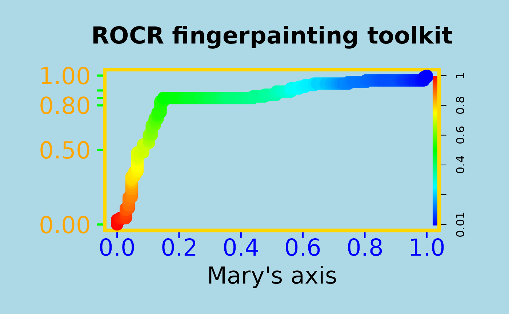

This is the method to plot all objects of class performance.
# S4 method for performance,missing plot( x, y, ..., avg = "none", spread.estimate = "none", spread.scale = 1, show.spread.at = c(), colorize = FALSE, colorize.palette = rev(rainbow(256, start = 0, end = 4/6)), colorkey = colorize, colorkey.relwidth = 0.25, colorkey.pos = "right", print.cutoffs.at = c(), cutoff.label.function = function(x) { round(x, 2) }, downsampling = 0, add = FALSE ) # S3 method for performance plot(...)
Arguments
| x | an object of class |
|---|---|
| y | not used |
| ... | Optional graphical parameters to adjust different components of
the performance plot. Parameters are directed to their target component by
prefixing them with the name of the component ( |
| avg | If the performance object describes several curves (from
cross-validation runs or bootstrap evaluations of one particular method),
the curves from each of the runs can be averaged. Allowed values are
|
| spread.estimate | When curve averaging is enabled, the variation around
the average curve can be visualized as standard error bars
( |
| spread.scale | For |
| show.spread.at | For vertical averaging, this vector determines the x positions for which the spread estimates should be visualized. In contrast, for horizontal and threshold averaging, the y positions and cutoffs are determined, respectively. By default, spread estimates are shown at 11 equally spaced positions. |
| colorize | This logical determines whether the curve(s) should be colorized according to cutoff. |
| colorize.palette | If curve colorizing is enabled, this determines the color palette onto which the cutoff range is mapped. |
| colorkey | If true, a color key is drawn into the 4% border
region (default of |
| colorkey.relwidth | Scalar between 0 and 1 that determines the fraction of the 4% border region that is occupied by the colorkey. |
| colorkey.pos | Determines if the colorkey is drawn vertically at
the |
| print.cutoffs.at | This vector specifies the cutoffs which should be printed as text along the curve at the corresponding curve positions. |
| cutoff.label.function | By default, cutoff annotations along the curve
or at the color key are rounded to two decimal places before printing.
Using a custom |
| downsampling | ROCR can efficiently compute most performance measures even for data sets with millions of elements. However, plotting of large data sets can be slow and lead to PS/PDF documents of considerable size. In that case, performance curves that are indistinguishable from the original can be obtained by using only a fraction of the computed performance values. Values for downsampling between 0 and 1 indicate the fraction of the original data set size to which the performance object should be downsampled, integers above 1 are interpreted as the actual number of performance values to which the curve(s) should be downsampled. |
| add | If |
References
A detailed list of references can be found on the ROCR homepage at http://rocr.bioinf.mpi-sb.mpg.de.
See also
Examples
# plotting a ROC curve: library(ROCR) data(ROCR.simple) pred <- prediction( ROCR.simple$predictions, ROCR.simple$labels ) pred#> A prediction instance #> with 200 data points#> A performance instance #> 'False positive rate' vs. 'True positive rate' (alpha: 'Cutoff') #> with 201 data pointsplot( perf )# To entertain your children, make your plots nicer # using ROCR's flexible parameter passing mechanisms # (much cheaper than a finger painting set) par(bg="lightblue", mai=c(1.2,1.5,1,1)) plot(perf, main="ROCR fingerpainting toolkit", colorize=TRUE, xlab="Mary's axis", ylab="", box.lty=7, box.lwd=5, box.col="gold", lwd=17, colorkey.relwidth=0.5, xaxis.cex.axis=2, xaxis.col='blue', xaxis.col.axis="blue", yaxis.col='green', yaxis.cex.axis=2, yaxis.at=c(0,0.5,0.8,0.85,0.9,1), yaxis.las=1, xaxis.lwd=2, yaxis.lwd=3, yaxis.col.axis="orange", cex.lab=2, cex.main=2)